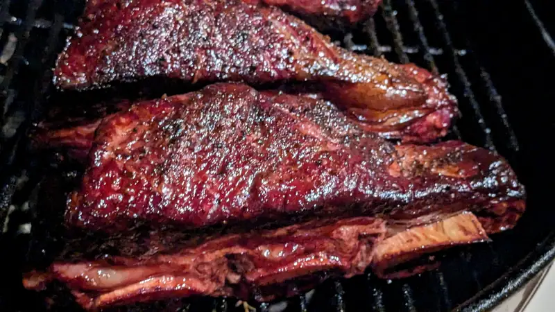

Costillas de res ahumadas
Sí, sí... ya se.. deja de ver redes sociales, se te va a atrofiar el cerebro!, pero mira... si no viera redes sociales, nunca hubiera visto los posts de los demas weyes que estaban ahumando costillas de res y hasta las exprimían porque disque les quedan jugosas... eh.. pero... no es "jugo" esa es manteca, pero bueno.. de que se ven MUY buenas en redes sociales, se ven MUY buenas y déjame te digo que no nom'as en redes sociales están buenas. Tenemos la foruna de vivir cerca de una tienda de Wild Fork y más afortunados todavía de haber recibido un cupón con el que tuvimos que "acompletar" para que se hiciera válido, y pues, ya estando ahí le acompletamos con un paquetito de esas costillas, que por cierto, salvo pedirlas con algún carnicero, se me había hecho difícil encontrarlas así como estas: sí, la costilla como de unos 20cm de largo, pero con CARNE, por lo regular las encuentro, pero como ese mismo pedazo se usa para otro cortes más redituables, por lo regular es el hueso de la costilla y con un par de centímetros de carne a lo mucho. En fin.. proceso? ahumar hasta 130F y envolver en papel de carnicero o aluminio y continuar en el asador o pasar al horno hasta que lleguen a 195~200F ... esa es una buena fórmula para que no se resequen y que además queden suaves para poder agarrarlas a mordidas y no desgastarte las quijadas mastique y mastique la carne chiclosa de las costillas. Las volvería a hacer? volvería a caer en las modas de las redes sociales? ... 'gmadre.. CLARO QUE SI!!
{kind=link}
Y mientras estaban en el asador... tsssss...
 {kind=link}